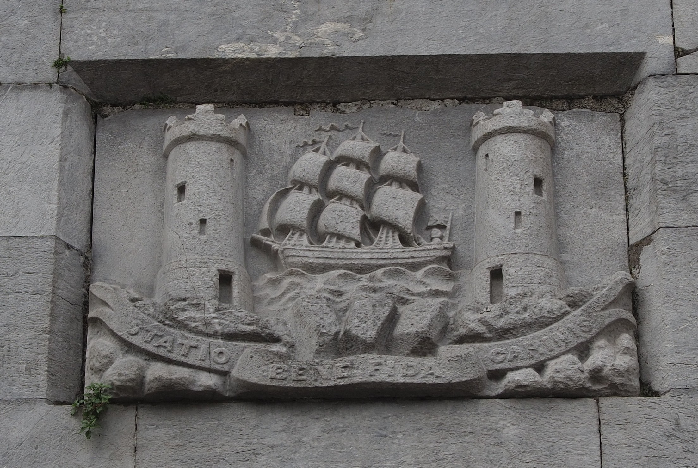
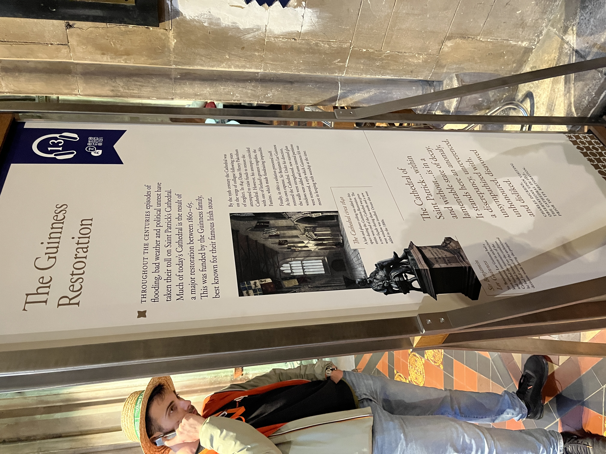
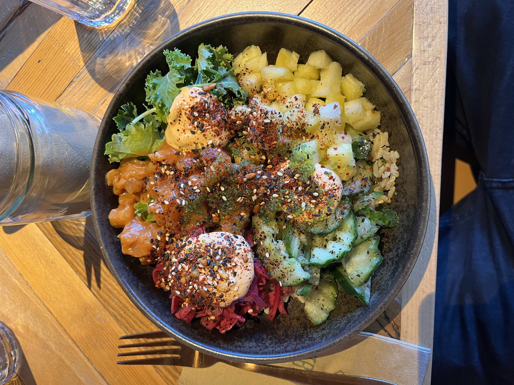

April 15, 2025
Cork
This was my third time visiting Cork, although I was too young to remember the first time, and the second time was just driving through. My main purpose for coming to Cork was to visit my grandmother, Breda! She grew up in the area and moved back full-time about a decade ago. Only staying one night was far too short of a visit with her but I was still glad to be able to visit. She lives in a cute little house near Ballincollig, about a half-hour drive from Cork city center. It was really nice to be able to sleep somewhere that wasn’t a hostel dorm room! I didn’t arrive in Cork until the late afternoon on Thursday so we didn’t really have time to sightseeing so we made the most of it on Friday. Started off on Friday with a Hop-on Hop-off bus. Normally I would never think of touring a city like this but it was actually pretty great. I got to see a lot of the Cork highlights in only an hour and a half. I think my favorite site was the Shandon Clock Tower, which the tour guide said was the largest 4-faced clock tower until Big Ben was built. When the tower was originally built the clock hands were made of wood and the locals called it the “Four-Faced Liar” because the hands would get blown in the wind and all tell a different time. After the bus tour, we walked around the University College Cork campus. Loved this campus, the original campus building was a beautiful old castle-looking building with a lot of nice green space. Next, we headed back to St. Patrick’s St, the central hub of Cork that traverses the Cork island. Breda grew up in the area and spent a lot of her life in Cork so she knew the history of almost every building and how it had changed in the last century! We spent the afternoon walking around Cork’s churches and cathedrals, including Saint Fin Barre’s Cathedral, St Peter’s, and the Irish Franciscans Church. Although we didn’t go inside, Saint Fin Barre’s Cathedral was one of my favorite cathedrals architecturally that I’ve seen in Europe.




Dublin
Guinness Storehouse
Despite probably being the number one tourist attraction in Dublin I loved the Guinness Storehouse. For only 30 euros to visit the whole building with a free Guinness sample and pint it seemed like a pretty decent deal too. The whole storehouse is totally over the top with large exhibits dedicated to the ingredients, brewing process, advertising, and legacy of Guinness. I learned a surprising amount about the brewing of Guinness and loved the section about the advertising schemes, there were so many random goofy posters with animals. “Lovely day for a Guinness!”. The tour ended at the top of the Storehouse with fantastic views of Dublin. I definitely gained a new appreciation for Guinness as a company and am now a certified Guinness enjoyer!

St Patrick’s Cathedral
Carson and I spent a solid hour and a half in St Patrick’s Cathedral, the National Cathedral of Ireland. There was a 10 euro admission fee but an audio tour of the Cathedral was included. The audio tour shared a lot of really interesting history of the Cathedral. My favorite part was all the old flags hung up to commemorate Irish soldiers and the Knights of St Patrick’s. There was also a lot of really great stained glass, I think the Irish churches have the most beautiful stained glass of anywhere I’ve been. Entertainingly the Cathedral probably wouldn’t be around today if it wasn’t for the 1860-1865 restoration funded by the Guinness family for the equivalent of 22 million euro today. Carson and I were joking that it seems like everything in Dublin is connected to Guinness somehow.



Other
Abbey Court Hostel
In Dublin, we stayed at the Abbey Court Hostel, definitely the strangest hostel I’ve been in yet. Every wall was covered in artwork and the place was a total maze, to get to our dorm room we had to walk through part of the women’s bathroom. It was $70 per night for a six-bed dorm room which was the cheapest we could find in Dublin, seems so crazy expensive compared to the $20-30 per night I’ve paid in other cities. The price did include free breakfast, although it was shitty, and a game room with foosball, table tennis, and pool which we had fun in.
Gardens at the Royal Hospital Kilmainham
We arrived a half hour early for our Guinness Storehouse tour so to kill some time we wandered over to a nearby park which ended up being great. The gardens at the Royal Hospital Kilmainham felt like something straight out of Game of Thrones with all the manicured hedges. We found a fun little bird that wanted to pose for a picture too.
National Gallery of Ireland
On Sunday morning we had an hour to kill between the hostel check-out and when I had to take the bus to the airport so we decided to check out the National Gallery. Amazingly the Gallery is free for anyone and has a lot of really amazing art. I loved all the landscape paintings. I would highly recommend spending some time there if you have some time to kill in Dublin.


Food
My favorite meal in Cork was at a quaint little restaurant called Scoozi. I got a prosciutto and arugula pizza that was tasty. The first night in Dublin Carson and I went to a delicious noodles place called Lee’s Charming Noodles, unfortunately, I didn’t get a picture. For lunch on Sunday we got poke bowls which might actually be the healthier meals I’ve had yet, and it tasted great. For dinner on Saturday we went to White Rabbit. The restaurant was hidden in the back of a convenience store but totally worth it, I got the chicken cup bop and loved it.
